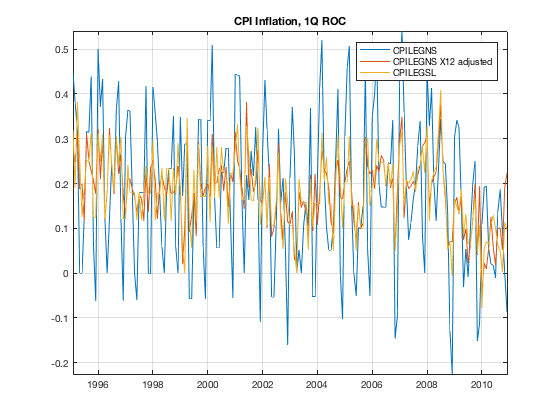
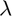
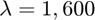
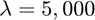
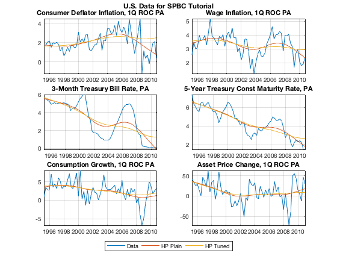

Import CSV Data Files and Prepare Data
Load basic data from CSV data files into databases where each series is represented by a time series object. Prepare the data to be used later with the model: seasonally adjust, convert to quaterly periodicity, and create model-consistent variable names.
Contents
Clear Workspace
Clear workspace, close all graphics figures, clear command window, and check the IRIS version.
clear close all clc irisrequired 20180131
Load CSV Data File
The series in the three data files (Simple_SPBC_quarterly.csv, Simple_SPBC_monthly.csv, Simple_SPBC_daily.csv) have been downloaded from http://research.stlouisfed.org/fred2.
Quarterly series:
- GDPC96 -- Real Gross Domestic Product, 3 Decimal
- GDPCTPI -- Gross Domestic Product: Chain-type Price Index
Monthly series:
- AHETPI -- Average Hourly Earnings: Total Private Industries
- CPILEGNS -- Consumer Price Index for All Urban Consumers: All Items Less Energy, Seasonally Not Adjusted
- CPILEGSL -- Consumer Price Index for All Urban Consumers: All Items Less Energy, Seasonally Adjusted
- GS5 -- 5-Year Treasury Constant Maturity Rate
- PCE -- Personal Consumption Expenditures
- PCEC96 -- Real Personal Consumption Expenditures
- TB3MS -- 3-Month Treasury Bill: Secondary Market Rate
Daily series:
- SP500 -- S&P 500 Index
rawQ = dbload('Simple_SPBC_quarterly.csv', ... 'freq=', 4, 'dateFormat=', 'YYYY-MM-01'); rawM = dbload('Simple_SPBC_monthly.csv', ... 'dateFormat=', 'YYYY-MM-01'); rawD = dbload('Simple_SPBC_daily.csv', ... 'freq=', 365, 'dateFormat=', 'YYYY-MM-DD'); disp('Quarterly Database') rawQ %#ok<NOPTS> disp('Monthly Database') rawM %#ok<NOPTS> disp('Daily Database') rawD %#ok<NOPTS>
Quarterly Database
rawQ =
struct with fields:
GDPC96: [64x1 Series]
GDPCTPI: [64x1 Series]
Monthly Database
rawM =
struct with fields:
AHETPI: [192x1 Series]
CPILEGNS: [192x1 Series]
CPILEGSL: [192x1 Series]
GS5: [192x1 Series]
PCE: [191x1 Series]
PCEC96: [191x1 Series]
TB3MS: [192x1 Series]
Daily Database
rawD =
struct with fields:
SP500: [5869x1 Series]
Display Daily Series
Daily time series are printed in tabular format on the screen, with each month occupying one entire row.
rawD.SP500
ans = Series object: 5869-by-1 D1 D2 D3 D4 D5 D6 D7 D8 D9 D10 D11 D12 D13 D14 D15 D16 D17 D18 D19 D20 D21 D22 D23 D24 D25 D26 D27 D28 D29 D30 D31 Jan-1995: NaN NaN 459.11 460.71 460.34 460.68 NaN NaN 460.83 461.68 461.66 461.64 465.97 NaN NaN 469.38 470.05 469.72 466.95 464.78 NaN NaN 465.81 465.86 467.44 468.32 470.39 NaN NaN 468.51 470.42 Feb-1995: 470.4 472.78 478.64 NaN NaN 481.14 480.81 481.19 480.19 481.46 NaN NaN 481.65 482.55 484.54 485.22 481.97 NaN NaN NaN 482.74 485.07 486.91 488.11 NaN NaN 483.81 487.39 * * * Mar-1995: 485.65 485.13 485.42 NaN NaN 485.63 482.12 483.14 483.16 489.57 NaN NaN 490.05 492.89 491.88 495.41 495.52 NaN NaN 496.15 495.07 495.67 495.95 500.97 NaN NaN 503.2 503.9 503.12 502.22 500.71 Apr-1995: NaN NaN 501.85 505.24 505.57 506.08 506.42 NaN NaN 507.01 505.53 507.17 509.23 NaN NaN NaN 506.13 505.37 504.92 505.29 508.49 NaN NaN 512.89 512.1 512.66 513.55 514.71 NaN NaN * May-1995: 514.26 514.86 520.48 520.54 520.12 NaN NaN 523.96 523.56 524.36 524.37 525.55 NaN NaN 527.74 528.19 527.07 519.58 519.19 NaN NaN 523.65 528.59 528.61 528.59 523.65 NaN NaN NaN 523.58 533.4 Jun-1995: 533.49 532.51 NaN NaN 535.6 535.55 533.13 532.35 527.94 NaN NaN 530.88 536.05 536.47 537.12 539.83 NaN NaN 545.22 544.98 543.98 551.07 549.71 NaN NaN 544.13 542.43 544.73 543.87 544.75 * Jul-1995: NaN NaN 547.09 NaN 547.26 553.99 556.37 NaN NaN 557.19 554.78 560.89 561 559.89 NaN NaN 562.72 558.46 550.98 553.54 553.62 NaN NaN 556.63 561.1 561.61 565.22 562.93 NaN NaN 562.06 Aug-1995: 559.64 558.8 558.75 558.94 NaN NaN 560.03 560.39 559.71 557.45 555.11 NaN NaN 559.74 558.57 559.97 559.04 559.21 NaN NaN 558.11 559.52 557.14 557.46 560.1 NaN NaN 559.05 560 560.92 561.88 Sep-1995: 563.84 NaN NaN NaN 569.17 570.17 570.29 572.68 NaN NaN 573.91 576.51 578.77 583.61 583.35 NaN NaN 582.77 584.2 586.77 583 581.73 NaN NaN 581.81 581.41 581.04 585.87 584.41 NaN * Oct-1995: NaN 581.72 582.34 581.47 582.63 582.49 NaN NaN 578.37 577.52 579.46 583.1 584.5 NaN NaN 583.03 586.78 587.44 590.65 587.46 NaN NaN 585.06 586.54 582.47 576.72 579.7 NaN NaN 583.25 581.5 Nov-1995: 584.22 589.72 590.57 NaN NaN 588.46 586.32 591.71 593.26 592.72 NaN NaN 592.3 589.29 593.96 597.34 600.07 NaN NaN 596.85 600.24 598.4 NaN 599.97 NaN NaN 601.32 606.45 607.64 605.37 * Dec-1995: 606.98 NaN NaN 613.68 617.68 620.18 616.17 617.48 NaN NaN 619.52 618.78 621.69 616.92 616.34 NaN NaN 606.81 611.93 605.94 610.49 611.96 NaN NaN NaN 614.3 614.53 614.12 615.93 NaN NaN Jan-1996: NaN 620.73 621.32 617.7 616.71 NaN NaN 618.46 609.45 598.48 602.69 601.81 NaN NaN 599.82 608.44 606.37 608.24 611.83 NaN NaN 613.4 612.79 619.96 617.03 621.62 NaN NaN 624.22 630.15 636.02 Feb-1996: 638.46 635.84 NaN NaN 641.43 646.33 649.93 656.07 656.37 NaN NaN 661.45 660.51 655.58 651.32 647.98 NaN NaN NaN 640.65 648.1 658.86 659.08 NaN NaN 650.46 647.24 644.75 640.43 * * Mar-1996: 644.37 NaN NaN 650.81 655.79 652 653.65 633.5 NaN NaN 640.02 637.09 638.55 640.87 641.43 NaN NaN 652.65 651.69 649.98 649.19 650.62 NaN NaN 650.04 652.97 648.91 648.94 645.5 NaN NaN Apr-1996: 653.73 655.26 655.88 655.86 NaN NaN NaN 644.24 642.19 633.5 631.18 636.71 NaN NaN 642.49 645 641.61 643.61 645.07 NaN NaN 647.89 651.58 650.17 652.87 653.46 NaN NaN 654.16 654.17 * May-1996: 654.58 643.38 641.63 NaN NaN 640.81 638.26 644.77 645.44 652.09 NaN NaN 661.51 665.6 665.42 664.85 668.91 NaN NaN 673.15 672.76 678.42 676 678.51 NaN NaN NaN 672.23 667.93 671.7 669.12 Jun-1996: NaN NaN 667.68 672.56 678.44 673.03 673.31 NaN NaN 672.16 670.97 669.04 667.92 665.85 NaN NaN 665.16 662.06 661.96 662.1 666.84 NaN NaN 668.85 668.48 664.39 668.55 670.63 NaN NaN * Jul-1996: 675.88 673.61 672.4 NaN 657.44 NaN NaN 652.54 654.75 656.06 645.67 646.19 NaN NaN 629.8 628.37 634.07 643.56 638.73 NaN NaN 633.77 626.87 626.65 631.17 635.9 NaN NaN 630.91 635.26 639.95 Aug-1996: 650.02 662.49 NaN NaN 660.23 662.38 664.16 662.59 662.1 NaN NaN 665.77 660.2 662.05 662.28 665.21 NaN NaN 666.58 665.69 665.07 670.68 667.03 NaN NaN 663.88 666.4 664.81 657.4 651.99 NaN Sep-1996: NaN NaN 654.72 655.61 649.44 655.68 NaN NaN 663.76 663.81 667.28 671.15 680.54 NaN NaN 683.98 682.94 681.47 683 687.03 NaN NaN 686.48 685.61 685.83 685.86 686.19 NaN NaN 687.31 * Oct-1996: 689.08 694.01 692.78 701.46 NaN NaN 703.34 700.64 696.74 694.61 700.66 NaN NaN 703.54 702.57 704.41 706.99 710.82 NaN NaN 709.85 706.57 707.27 702.29 700.92 NaN NaN 697.26 701.5 700.9 705.27 Nov-1996: 703.77 NaN NaN 706.73 714.14 724.59 727.65 730.82 NaN NaN 731.87 729.56 731.13 735.88 737.62 NaN NaN 737.02 742.16 743.95 742.75 748.73 NaN NaN 757.03 755.96 755 NaN 757.02 NaN * Dec-1996: NaN 756.56 748.28 745.1 744.38 739.6 NaN NaN 749.81 747.54 740.73 729.33 728.64 NaN NaN 720.98 726.04 731.54 745.76 748.87 NaN NaN 746.92 751.03 NaN 755.82 756.79 NaN NaN 753.85 740.74 Jan-1997: NaN 737.01 748.03 NaN NaN 747.65 753.23 748.41 754.85 759.5 NaN NaN 759.51 768.86 767.2 769.75 776.17 NaN NaN 776.7 782.72 786.23 777.56 770.52 NaN NaN 765.02 765.02 772.5 784.17 786.16 Feb-1997: NaN NaN 786.73 789.26 778.28 780.15 789.56 NaN NaN 785.43 789.59 802.77 811.82 808.48 NaN NaN NaN 816.29 812.49 802.8 801.77 NaN NaN 810.28 812.1 805.68 795.07 790.82 * * * Mar-1997: NaN NaN 795.31 790.95 801.99 798.56 804.97 NaN NaN 813.65 811.34 804.26 789.56 793.17 NaN NaN 795.71 789.66 785.77 782.65 784.1 NaN NaN 790.89 789.07 790.5 773.88 NaN NaN NaN 757.12 Apr-1997: 759.64 750.11 750.32 757.9 NaN NaN 762.13 766.12 760.6 758.34 737.65 NaN NaN 743.73 754.72 763.53 761.77 766.34 NaN NaN 760.37 774.61 773.64 771.18 765.37 NaN NaN 772.96 794.05 801.34 * May-1997: 798.53 812.97 NaN NaN 830.24 827.76 815.62 820.26 824.78 NaN NaN 837.66 833.13 836.04 841.88 829.75 NaN NaN 833.27 841.66 839.35 835.66 847.03 NaN NaN NaN 849.71 847.21 844.08 848.28 NaN Jun-1997: NaN 846.36 845.48 840.11 843.43 858.01 NaN NaN 862.91 865.27 869.57 883.48 893.27 NaN NaN 893.9 894.42 889.06 897.99 898.7 NaN NaN 878.62 896.34 888.99 883.68 887.3 NaN NaN 885.14 * Jul-1997: 891.03 904.03 916.92 NaN NaN NaN 912.2 918.75 907.54 913.78 916.68 NaN NaN 918.38 925.76 936.59 931.61 915.3 NaN NaN 912.94 933.98 936.56 940.3 938.79 NaN NaN 936.45 942.29 952.29 954.29 Aug-1997: 947.14 NaN NaN 950.3 952.37 960.32 951.19 933.54 NaN NaN 937 926.53 922.02 924.77 900.81 NaN NaN 912.49 926.01 939.35 925.05 923.55 NaN NaN 920.16 913.02 913.7 903.67 899.47 NaN NaN Sep-1997: NaN 927.58 927.86 930.87 929.05 NaN NaN 931.2 933.62 919.03 912.59 923.91 NaN NaN 919.77 945.64 943 947.29 950.51 NaN NaN 955.43 951.93 944.48 937.91 945.22 NaN NaN 953.34 947.28 * Oct-1997: 955.41 960.46 965.03 NaN NaN 972.69 983.12 973.84 970.62 966.98 NaN NaN 968.1 970.28 965.72 955.23 944.16 NaN NaN 955.61 972.28 968.49 950.69 941.64 NaN NaN 876.99 921.85 919.16 903.68 914.62 Nov-1997: NaN NaN 938.99 940.76 942.76 938.03 927.51 NaN NaN 921.13 923.78 905.96 916.66 928.35 NaN NaN 946.2 938.23 944.59 958.98 963.09 NaN NaN 946.67 950.82 951.64 NaN 955.4 NaN NaN * Dec-1997: 974.78 971.68 976.77 973.1 983.79 NaN NaN 982.37 975.78 969.79 954.94 953.39 NaN NaN 963.39 968.04 965.54 955.3 946.78 NaN NaN 953.7 939.13 932.7 NaN 936.46 NaN NaN 953.35 970.84 970.43 Jan-1998: NaN 975.04 NaN NaN 977.07 966.58 964 956.05 927.69 NaN NaN 939.21 952.12 957.94 950.73 961.51 NaN NaN NaN 978.6 970.81 963.04 957.59 NaN NaN 956.95 969.02 977.46 985.49 980.28 NaN Feb-1998: NaN 1001.27 1006 1006.9 1003.54 1012.46 NaN NaN 1010.74 1019.01 1020.01 1024.14 1020.09 NaN NaN NaN 1022.76 1032.08 1028.28 1034.21 NaN NaN 1038.14 1030.56 1042.9 1048.67 1049.34 NaN * * * Mar-1998: NaN 1047.7 1052.02 1047.33 1035.05 1055.69 NaN NaN 1052.31 1064.25 1068.47 1069.92 1068.61 NaN NaN 1079.27 1080.45 1085.52 1089.74 1099.16 NaN NaN 1095.55 1105.65 1101.93 1100.8 1095.44 NaN NaN 1093.55 1101.75 Apr-1998: 1108.15 1120.01 1122.7 NaN NaN 1121.38 1109.54 1101.65 1110.67 NaN NaN NaN 1109.69 1115.75 1119.32 1108.17 1122.72 NaN NaN 1123.65 1126.67 1130.54 1119.58 1107.9 NaN NaN 1086.54 1085.11 1094.63 1111.75 * May-1998: 1121 NaN NaN 1122.07 1115.5 1104.92 1095.14 1108.14 NaN NaN 1106.64 1115.79 1118.86 1117.37 1108.73 NaN NaN 1105.82 1109.52 1119.06 1114.64 1110.47 NaN NaN NaN 1094.02 1092.23 1097.6 1090.82 NaN NaN Jun-1998: 1090.98 1093.22 1082.73 1094.83 1113.86 NaN NaN 1115.72 1118.41 1112.28 1094.58 1098.84 NaN NaN 1077.01 1087.59 1107.11 1106.37 1100.65 NaN NaN 1103.21 1119.49 1132.88 1129.28 1133.2 NaN NaN 1138.49 1133.84 * Jul-1998: 1148.56 1146.42 NaN NaN NaN 1157.33 1154.66 1166.38 1158.56 1164.33 NaN NaN 1165.19 1177.58 1174.81 1183.99 1186.75 NaN NaN 1184.1 1165.07 1164.08 1139.75 1140.8 NaN NaN 1147.27 1130.24 1125.21 1142.95 1120.67 Aug-1998: NaN NaN 1112.44 1072.12 1081.43 1089.63 1089.45 NaN NaN 1083.14 1068.98 1084.22 1074.91 1062.75 NaN NaN 1083.67 1101.2 1098.06 1091.6 1081.24 NaN NaN 1088.14 1092.85 1084.19 1042.59 1027.14 NaN NaN 957.28 Sep-1998: 994.26 990.47 982.26 973.89 NaN NaN NaN 1023.46 1006.2 980.19 1009.06 NaN NaN 1029.72 1037.68 1045.48 1018.87 1020.09 NaN NaN 1023.89 1029.63 1066.09 1042.72 1044.75 NaN NaN 1048.69 1049.02 1017.01 * Oct-1998: 986.39 1002.6 NaN NaN 988.56 984.59 970.68 959.44 984.39 NaN NaN 997.71 994.8 1005.53 1047.49 1056.42 NaN NaN 1062.39 1063.93 1069.92 1078.48 1070.67 NaN NaN 1072.32 1065.34 1068.09 1085.93 1098.67 NaN Nov-1998: NaN 1111.6 1110.84 1118.67 1133.85 1141.01 NaN NaN 1130.2 1128.26 1120.97 1117.69 1125.72 NaN NaN 1135.87 1139.32 1144.48 1152.61 1163.55 NaN NaN 1188.21 1182.99 1186.87 NaN 1192.33 NaN NaN 1163.63 * Dec-1998: 1175.28 1171.25 1150.14 1176.74 NaN NaN 1187.7 1181.38 1183.49 1165.02 1166.46 NaN NaN 1141.2 1162.83 1161.94 1179.98 1188.03 NaN NaN 1202.84 1203.57 1228.54 1226.27 NaN NaN NaN 1225.49 1241.81 1231.93 1229.23 Jan-1999: NaN NaN NaN 1228.1 1244.78 1272.34 1269.73 1275.09 NaN NaN 1263.88 1239.51 1234.4 1212.19 1243.26 NaN NaN NaN 1252 1256.62 1235.16 1225.19 NaN NaN 1233.98 1252.31 1243.17 1265.37 1279.64 NaN NaN Feb-1999: 1273 1261.99 1272.07 1248.49 1239.4 NaN NaN 1243.77 1216.14 1223.55 1254.04 1230.13 NaN NaN NaN 1241.87 1224.03 1237.28 1239.22 NaN NaN 1272.14 1271.18 1253.41 1245.02 1238.33 NaN NaN * * * Mar-1999: 1236.16 1225.5 1227.7 1246.64 1275.47 NaN NaN 1282.73 1279.84 1286.84 1297.68 1294.59 NaN NaN 1307.26 1306.38 1297.82 1316.55 1299.29 NaN NaN 1297.01 1262.14 1268.59 1289.99 1282.8 NaN NaN 1310.17 1300.75 1286.37 Apr-1999: 1293.72 NaN NaN NaN 1321.12 1317.89 1326.89 1343.98 1348.35 NaN NaN 1358.64 1349.82 1328.44 1322.86 1319 NaN NaN 1289.48 1306.17 1336.12 1358.82 1356.85 NaN NaN 1360.04 1362.8 1350.91 1342.83 1335.18 * May-1999: NaN NaN 1354.63 1332 1347.31 1332.05 1345 NaN NaN 1340.3 1355.61 1364 1367.56 1337.8 NaN NaN 1339.49 1333.32 1344.23 1338.83 1330.29 NaN NaN 1306.65 1284.4 1304.76 1281.41 1301.84 NaN NaN NaN Jun-1999: 1294.26 1294.81 1299.54 1327.75 NaN NaN 1334.52 1317.33 1318.64 1302.82 1293.64 NaN NaN 1294 1301.16 1330.41 1339.9 1342.84 NaN NaN 1349 1335.88 1333.06 1315.78 1315.31 NaN NaN 1331.35 1351.45 1372.71 * Jul-1999: 1380.96 1391.22 NaN NaN NaN 1388.12 1395.86 1394.42 1403.28 NaN NaN 1399.1 1393.56 1398.17 1409.62 1418.78 NaN NaN 1407.65 1377.1 1379.29 1360.97 1356.94 NaN NaN 1347.76 1362.84 1365.4 1341.03 1328.72 NaN Aug-1999: NaN 1328.05 1322.18 1305.33 1313.71 1300.29 NaN NaN 1297.8 1281.43 1301.93 1298.16 1327.68 NaN NaN 1330.77 1344.16 1332.84 1323.59 1336.61 NaN NaN 1360.22 1363.5 1381.79 1362.01 1348.27 NaN NaN 1324.02 1320.41 Sep-1999: 1331.07 1319.11 1357.24 NaN NaN NaN 1350.45 1344.15 1347.66 1351.66 NaN NaN 1344.13 1336.29 1317.97 1318.48 1335.42 NaN NaN 1335.53 1307.58 1310.51 1280.41 1277.36 NaN NaN 1283.31 1282.2 1268.37 1282.71 * Oct-1999: 1282.81 NaN NaN 1304.6 1301.35 1325.4 1317.64 1336.02 NaN NaN 1335.21 1313.04 1285.55 1283.42 1247.41 NaN NaN 1254.13 1261.32 1289.43 1283.61 1301.65 NaN NaN 1293.63 1281.91 1296.71 1342.44 1362.93 NaN NaN Nov-1999: 1354.12 1347.74 1354.93 1362.64 1370.23 NaN NaN 1377.01 1365.28 1373.46 1381.46 1396.06 NaN NaN 1394.39 1420.07 1410.71 1424.94 1422 NaN NaN 1420.94 1404.64 1417.08 NaN 1416.62 NaN NaN 1407.83 1388.91 * Dec-1999: 1397.72 1409.04 1433.3 NaN NaN 1423.33 1409.17 1403.88 1408.11 1417.04 NaN NaN 1415.22 1403.17 1413.32 1418.78 1421.03 NaN NaN 1418.09 1433.43 1436.13 1458.34 NaN NaN NaN 1457.1 1457.66 1463.46 1464.47 1469.25 Jan-2000: NaN NaN 1455.22 1399.42 1402.11 1403.45 1441.47 NaN NaN 1457.6 1438.56 1432.25 1449.68 1465.15 NaN NaN NaN 1455.14 1455.9 1445.57 1441.36 NaN NaN 1401.53 1410.03 1404.09 1398.56 1360.16 NaN NaN 1394.46 Feb-2000: 1409.28 1409.12 1424.97 1424.37 NaN NaN 1424.24 1441.72 1411.7 1416.83 1387.12 NaN NaN 1389.94 1402.05 1387.67 1388.26 1346.09 NaN NaN NaN 1352.17 1360.69 1353.43 1333.36 NaN NaN 1348.05 1366.42 * * Mar-2000: 1379.19 1381.76 1409.17 NaN NaN 1391.28 1355.62 1366.7 1401.69 1395.07 NaN NaN 1383.62 1359.15 1392.15 1458.47 1464.47 NaN NaN 1456.63 1493.87 1500.64 1527.35 1527.46 NaN NaN 1523.86 1507.73 1508.52 1487.92 1498.58 Apr-2000: NaN NaN 1505.97 1494.73 1487.37 1501.34 1516.35 NaN NaN 1504.46 1500.59 1467.17 1440.51 1356.56 NaN NaN 1401.44 1441.61 1427.47 1434.54 NaN NaN NaN 1429.86 1477.44 1460.99 1464.92 1452.43 NaN NaN * May-2000: 1468.25 1446.29 1415.1 1409.57 1432.63 NaN NaN 1424.17 1412.14 1383.05 1407.81 1420.96 NaN NaN 1452.36 1466.04 1447.8 1437.21 1406.95 NaN NaN 1400.72 1373.86 1399.05 1381.52 1378.02 NaN NaN NaN 1422.45 1420.6 Jun-2000: 1448.81 1477.26 NaN NaN 1467.63 1457.84 1471.36 1461.67 1456.95 NaN NaN 1446 1469.44 1470.54 1478.73 1464.46 NaN NaN 1486 1475.95 1479.13 1452.18 1441.48 NaN NaN 1455.31 1450.55 1454.82 1442.39 1454.6 * Jul-2000: NaN NaN 1469.54 NaN 1446.23 1456.67 1478.9 NaN NaN 1475.62 1480.88 1492.92 1495.84 1509.98 NaN NaN 1510.49 1493.74 1481.96 1495.57 1480.19 NaN NaN 1464.29 1474.47 1452.42 1449.62 1419.89 NaN NaN 1430.83 Aug-2000: 1438.1 1438.7 1452.56 1462.93 NaN NaN 1479.32 1482.8 1472.87 1460.25 1471.84 NaN NaN 1491.56 1484.43 1479.85 1496.07 1491.72 NaN NaN 1499.48 1498.13 1505.97 1508.31 1506.45 NaN NaN 1514.09 1509.84 1502.59 1517.68 Sep-2000: 1520.77 NaN NaN NaN 1507.08 1492.25 1502.51 1494.5 NaN NaN 1489.26 1481.99 1484.91 1480.87 1465.81 NaN NaN 1444.51 1459.9 1451.34 1449.05 1448.72 NaN NaN 1439.03 1427.21 1426.57 1458.29 1436.51 NaN * Oct-2000: NaN 1436.23 1426.46 1434.32 1436.28 1408.99 NaN NaN 1402.03 1387.02 1364.59 1329.78 1374.17 NaN NaN 1374.62 1349.97 1342.13 1388.76 1396.93 NaN NaN 1395.78 1398.13 1364.9 1364.44 1379.58 NaN NaN 1398.66 1429.4 Nov-2000: 1421.22 1428.32 1426.69 NaN NaN 1432.19 1431.87 1409.28 1400.14 1365.98 NaN NaN 1351.26 1382.95 1389.81 1372.32 1367.72 NaN NaN 1342.62 1347.35 1322.36 NaN 1341.77 NaN NaN 1348.97 1336.09 1341.91 1314.95 * Dec-2000: 1315.23 NaN NaN 1324.97 1376.54 1351.46 1343.55 1369.89 NaN NaN 1380.2 1371.18 1359.99 1340.93 1312.15 NaN NaN 1322.74 1305.6 1264.74 1274.86 1305.97 NaN NaN NaN 1315.19 1328.92 1334.22 1320.28 NaN NaN Jan-2001: NaN 1283.27 1347.56 1333.34 1298.35 NaN NaN 1295.86 1300.8 1313.27 1326.82 1318.32 NaN NaN NaN 1326.65 1329.47 1347.97 1342.54 NaN NaN 1342.9 1360.4 1364.3 1357.51 1354.95 NaN NaN 1364.17 1373.73 1366.01 Feb-2001: 1373.47 1349.47 NaN NaN 1354.31 1352.26 1340.89 1332.53 1314.76 NaN NaN 1330.31 1318.8 1315.92 1326.61 1301.53 NaN NaN NaN 1278.94 1255.27 1252.82 1245.86 NaN NaN 1267.65 1257.94 1239.94 * * * Mar-2001: 1241.23 1234.18 NaN NaN 1241.41 1253.8 1261.89 1264.74 1233.42 NaN NaN 1180.16 1197.66 1166.71 1173.56 1150.53 NaN NaN 1170.81 1142.62 1122.14 1117.58 1139.83 NaN NaN 1152.69 1182.17 1153.29 1147.95 1160.33 NaN Apr-2001: NaN 1145.87 1106.46 1103.25 1151.44 1128.43 NaN NaN 1137.59 1168.38 1165.89 1183.5 NaN NaN NaN 1179.68 1191.81 1238.16 1253.7 1242.98 NaN NaN 1224.36 1209.47 1228.75 1234.52 1253.05 NaN NaN 1249.46 * May-2001: 1266.44 1267.43 1248.58 1266.61 NaN NaN 1263.51 1261.2 1255.54 1255.18 1245.67 NaN NaN 1248.92 1249.44 1284.99 1288.49 1291.96 NaN NaN 1312.83 1309.38 1289.05 1293.17 1277.89 NaN NaN NaN 1267.93 1248.08 1255.82 Jun-2001: 1260.67 NaN NaN 1267.11 1283.57 1270.03 1276.96 1264.96 NaN NaN 1254.39 1255.85 1241.6 1219.87 1214.36 NaN NaN 1208.43 1212.58 1223.14 1237.04 1225.35 NaN NaN 1218.6 1216.76 1211.07 1226.2 1224.42 NaN * Jul-2001: NaN 1236.71 1234.45 NaN 1219.24 1190.59 NaN NaN 1198.78 1181.52 1180.18 1208.14 1215.68 NaN NaN 1202.45 1214.44 1207.71 1215.02 1210.85 NaN NaN 1191.03 1171.65 1190.49 1202.93 1205.82 NaN NaN 1204.52 1211.23 Aug-2001: 1215.93 1220.75 1214.35 NaN NaN 1200.48 1204.4 1183.53 1183.43 1190.16 NaN NaN 1191.29 1186.73 1178.02 1181.66 1161.97 NaN NaN 1171.41 1157.26 1165.31 1162.09 1184.93 NaN NaN 1179.21 1161.51 1148.6 1129.03 1133.58 Sep-2001: NaN NaN NaN 1132.94 1131.74 1106.4 1085.78 NaN NaN 1092.54 NaN NaN NaN NaN NaN NaN 1038.77 1032.74 1016.1 984.54 965.8 NaN NaN 1003.45 1012.27 1007.04 1018.61 1040.94 NaN NaN * Oct-2001: 1038.55 1051.33 1072.28 1069.63 1071.38 NaN NaN 1062.44 1056.75 1080.99 1097.43 1091.65 NaN NaN 1089.98 1097.54 1077.09 1068.61 1073.48 NaN NaN 1089.9 1084.78 1085.2 1100.09 1104.61 NaN NaN 1078.3 1059.79 1059.78 Nov-2001: 1084.1 1087.2 NaN NaN 1102.84 1118.86 1115.8 1118.54 1120.31 NaN NaN 1118.33 1139.09 1141.21 1142.24 1138.65 NaN NaN 1151.06 1142.66 1137.03 NaN 1150.34 NaN NaN 1157.42 1149.5 1128.52 1140.2 1139.45 * Dec-2001: NaN NaN 1129.9 1144.8 1170.35 1167.1 1158.31 NaN NaN 1139.93 1136.76 1137.07 1119.38 1123.09 NaN NaN 1134.36 1142.92 1149.56 1139.93 1144.89 NaN NaN 1144.65 NaN 1149.37 1157.13 1161.02 NaN NaN 1148.08 Jan-2002: NaN 1154.67 1165.27 1172.51 NaN NaN 1164.89 1160.71 1155.14 1156.55 1145.6 NaN NaN 1138.41 1146.19 1127.57 1138.88 1127.58 NaN NaN NaN 1119.31 1128.18 1132.15 1133.28 NaN NaN 1133.06 1100.64 1113.57 1130.2 Feb-2002: 1122.2 NaN NaN 1094.44 1090.02 1083.51 1080.17 1096.22 NaN NaN 1111.94 1107.5 1118.51 1116.48 1104.18 NaN NaN NaN 1083.34 1097.98 1080.95 1089.84 NaN NaN 1109.43 1109.38 1109.89 1106.73 * * * Mar-2002: 1131.78 NaN NaN 1153.84 1146.14 1162.77 1157.54 1164.31 NaN NaN 1168.26 1165.58 1154.09 1153.04 1166.16 NaN NaN 1165.55 1170.29 1151.85 1153.59 1148.7 NaN NaN 1131.87 1138.49 1144.58 1147.39 NaN NaN NaN Apr-2002: 1146.54 1136.76 1125.4 1126.34 1122.73 NaN NaN 1125.29 1117.8 1130.47 1103.69 1111.01 NaN NaN 1102.55 1128.37 1126.07 1124.47 1125.17 NaN NaN 1107.83 1100.96 1093.14 1091.48 1076.32 NaN NaN 1065.45 1076.92 * May-2002: 1086.46 1084.56 1073.43 NaN NaN 1052.67 1049.49 1088.85 1073.01 1054.99 NaN NaN 1074.56 1097.28 1091.07 1098.23 1106.59 NaN NaN 1091.88 1079.88 1086.02 1097.08 1083.82 NaN NaN NaN 1074.55 1067.66 1064.66 1067.14 Jun-2002: NaN NaN 1040.68 1040.69 1049.9 1029.15 1027.53 NaN NaN 1030.74 1013.6 1020.26 1009.56 1007.27 NaN NaN 1036.17 1037.14 1019.99 1006.29 989.14 NaN NaN 992.72 976.14 973.53 990.64 989.81 NaN NaN * Jul-2002: 968.65 948.09 953.99 NaN 989.03 NaN NaN 976.98 952.83 920.47 927.37 921.39 NaN NaN 917.93 901.05 906.04 881.56 847.76 NaN NaN 819.85 797.7 843.42 838.68 852.84 NaN NaN 898.96 902.78 911.62 Aug-2002: 884.66 864.24 NaN NaN 834.6 859.57 876.77 905.46 908.64 NaN NaN 903.8 884.21 919.62 930.25 928.77 NaN NaN 950.72 937.43 949.36 962.7 940.86 NaN NaN 947.95 934.82 917.87 917.8 916.07 NaN Sep-2002: NaN NaN 878.02 893.4 879.15 893.92 NaN NaN 902.96 909.58 909.45 886.91 889.81 NaN NaN 891.1 873.52 869.46 843.32 845.39 NaN NaN 833.7 819.29 839.66 854.95 827.37 NaN NaN 815.28 * Oct-2002: 847.91 827.91 818.95 800.58 NaN NaN 785.28 798.55 776.76 803.92 835.32 NaN NaN 841.44 881.27 860.02 879.2 884.39 NaN NaN 899.72 890.16 896.14 882.5 897.65 NaN NaN 890.23 882.15 890.71 885.76 Nov-2002: 900.96 NaN NaN 908.35 915.39 923.76 902.65 894.74 NaN NaN 876.19 882.95 882.53 904.27 909.83 NaN NaN 900.36 896.74 914.15 933.76 930.55 NaN NaN 932.88 913.31 938.87 NaN 936.31 NaN * Dec-2002: NaN 934.53 920.75 917.57 906.55 912.23 NaN NaN 892 904.45 904.96 901.59 889.48 NaN NaN 910.4 902.99 891.12 884.25 895.75 NaN NaN 897.38 892.47 NaN 889.66 875.4 NaN NaN 879.39 879.82 Jan-2003: NaN 909.03 908.59 NaN NaN 929.01 922.93 909.93 927.58 927.57 NaN NaN 926.26 931.66 918.22 914.6 901.78 NaN NaN NaN 887.62 878.36 887.34 861.4 NaN NaN 847.48 858.54 864.36 844.61 855.7 Feb-2003: NaN NaN 860.32 848.2 843.59 838.15 829.69 NaN NaN 835.97 829.2 818.68 817.37 834.89 NaN NaN NaN 851.17 845.13 837.1 848.17 NaN NaN 832.58 838.57 827.55 837.28 841.15 * * * Mar-2003: NaN NaN 834.81 821.99 829.85 822.1 828.89 NaN NaN 807.48 800.73 804.19 831.9 833.27 NaN NaN 862.79 866.45 874.02 875.67 895.79 NaN NaN 864.23 874.74 869.95 868.52 863.5 NaN NaN 848.18 Apr-2003: 858.48 880.9 876.45 878.85 NaN NaN 879.93 878.29 865.99 871.58 868.3 NaN NaN 885.23 890.81 879.91 893.58 NaN NaN NaN 892.01 911.37 919.02 911.43 898.81 NaN NaN 914.84 917.84 916.92 * May-2003: 916.3 930.08 NaN NaN 926.55 934.39 929.62 920.27 933.41 NaN NaN 945.11 942.3 939.28 946.67 944.3 NaN NaN 920.77 919.73 923.42 931.87 933.22 NaN NaN NaN 951.48 953.22 949.64 963.59 NaN Jun-2003: NaN 967 971.56 986.24 990.14 987.76 NaN NaN 975.93 984.84 997.48 998.51 988.61 NaN NaN 1010.74 1011.66 1010.09 994.7 995.69 NaN NaN 981.64 983.45 975.32 985.82 976.22 NaN NaN 974.5 * Jul-2003: 982.32 993.75 985.7 NaN NaN NaN 1004.42 1007.84 1002.21 988.7 998.14 NaN NaN 1003.86 1000.42 994 981.73 993.32 NaN NaN 978.8 988.11 988.61 981.6 998.68 NaN NaN 996.52 989.28 987.49 990.31 Aug-2003: 980.15 NaN NaN 982.82 965.46 967.08 974.12 977.59 NaN NaN 980.59 990.35 984.03 990.51 990.67 NaN NaN 999.74 1002.35 1000.3 1003.27 993.06 NaN NaN 993.71 996.73 996.79 1002.84 1008.01 NaN NaN Sep-2003: NaN 1021.99 1026.27 1027.97 1021.39 NaN NaN 1031.64 1023.17 1010.92 1016.42 1018.63 NaN NaN 1014.81 1029.32 1025.97 1039.58 1036.3 NaN NaN 1022.82 1029.03 1009.38 1003.27 996.85 NaN NaN 1006.58 995.97 * Oct-2003: 1018.22 1020.24 1029.85 NaN NaN 1034.35 1039.25 1033.78 1038.73 1038.06 NaN NaN 1045.35 1049.48 1046.76 1050.07 1039.32 NaN NaN 1044.68 1046.03 1030.36 1033.77 1028.91 NaN NaN 1031.13 1046.79 1048.11 1046.94 1050.71 Nov-2003: NaN NaN 1059.02 1053.25 1051.81 1058.05 1053.21 NaN NaN 1047.11 1046.57 1058.56 1058.41 1050.35 NaN NaN 1043.63 1034.15 1042.44 1033.65 1035.28 NaN NaN 1052.08 1053.89 1058.45 NaN 1058.2 NaN NaN * Dec-2003: 1070.12 1066.62 1064.73 1069.72 1061.5 NaN NaN 1069.3 1060.18 1059.05 1071.21 1074.14 NaN NaN 1068.04 1075.13 1076.48 1089.18 1088.67 NaN NaN 1092.94 1096.02 1094.04 NaN 1095.89 NaN NaN 1109.48 1109.64 1111.92 Jan-2004: NaN 1108.48 NaN NaN 1122.22 1123.67 1126.33 1131.92 1121.86 NaN NaN 1127.23 1121.22 1130.52 1132.05 1139.83 NaN NaN NaN 1138.77 1147.62 1143.94 1141.55 NaN NaN 1155.37 1144.05 1128.48 1134.11 1131.13 NaN Feb-2004: NaN 1135.26 1136.03 1126.52 1128.59 1142.76 NaN NaN 1139.81 1145.54 1157.76 1152.11 1145.81 NaN NaN NaN 1156.99 1151.82 1147.06 1144.11 NaN NaN 1140.99 1139.09 1143.67 1144.91 1144.94 NaN NaN * * Mar-2004: 1155.96 1149.1 1151.04 1154.88 1156.87 NaN NaN 1147.21 1140.58 1123.89 1106.78 1120.57 NaN NaN 1104.49 1110.7 1123.75 1122.32 1109.78 NaN NaN 1095.4 1093.95 1091.33 1109.19 1108.06 NaN NaN 1122.47 1127 1126.21 Apr-2004: 1132.17 1141.81 NaN NaN 1150.57 1148.16 1140.53 1139.32 NaN NaN NaN 1145.2 1129.44 1128.17 1128.84 1134.61 NaN NaN 1135.82 1118.15 1124.09 1139.93 1140.6 NaN NaN 1135.53 1138.11 1122.41 1113.89 1107.3 * May-2004: NaN NaN 1117.49 1119.55 1121.53 1113.99 1098.7 NaN NaN 1087.12 1095.45 1097.28 1096.44 1095.7 NaN NaN 1084.1 1091.49 1088.68 1089.19 1093.56 NaN NaN 1095.41 1113.05 1114.94 1121.28 1120.68 NaN NaN NaN Jun-2004: 1121.2 1124.99 1116.64 1122.5 NaN NaN 1140.42 1142.18 1131.33 1136.47 NaN NaN NaN 1125.29 1132.01 1133.56 1132.05 1135.02 NaN NaN 1130.3 1134.41 1144.06 1140.65 1134.43 NaN NaN 1133.35 1136.2 1140.84 * Jul-2004: 1128.94 1125.38 NaN NaN NaN 1116.21 1118.33 1109.11 1112.81 NaN NaN 1114.35 1115.14 1111.47 1106.69 1101.39 NaN NaN 1100.9 1108.67 1093.88 1096.84 1086.2 NaN NaN 1084.07 1094.83 1095.42 1100.43 1101.72 NaN Aug-2004: NaN 1106.62 1099.69 1098.63 1080.7 1063.97 NaN NaN 1065.22 1079.04 1075.79 1063.23 1064.8 NaN NaN 1079.34 1081.71 1095.17 1091.23 1098.35 NaN NaN 1095.68 1096.19 1104.96 1105.09 1107.77 NaN NaN 1099.15 1104.24 Sep-2004: 1105.91 1118.31 1113.63 NaN NaN NaN 1121.3 1116.27 1118.38 1123.92 NaN NaN 1125.82 1128.33 1120.37 1123.5 1128.55 NaN NaN 1122.2 1129.3 1113.56 1108.36 1110.11 NaN NaN 1103.52 1110.06 1114.8 1114.58 * Oct-2004: 1131.5 NaN NaN 1135.17 1134.48 1142.05 1130.65 1122.14 NaN NaN 1124.39 1121.84 1113.65 1103.29 1108.2 NaN NaN 1114.02 1103.23 1103.66 1106.49 1095.74 NaN NaN 1094.81 1111.09 1125.4 1127.44 1130.2 NaN NaN Nov-2004: 1130.51 1130.54 1143.2 1161.67 1166.17 NaN NaN 1164.89 1164.08 1162.91 1173.48 1184.17 NaN NaN 1183.81 1175.43 1181.94 1183.55 1170.34 NaN NaN 1177.24 1176.94 1181.76 NaN 1182.65 NaN NaN 1178.57 1173.82 * Dec-2004: 1191.37 1190.33 1191.17 NaN NaN 1190.25 1177.07 1182.81 1189.24 1188 NaN NaN 1198.68 1203.38 1205.72 1203.21 1194.22 NaN NaN 1194.65 1205.45 1209.57 1210.13 NaN NaN NaN 1204.92 1213.54 1213.45 1213.55 1211.92 Jan-2005: NaN NaN 1202.08 1188.05 1183.74 1187.89 1186.19 NaN NaN 1190.25 1182.99 1187.7 1177.45 1184.52 NaN NaN NaN 1195.98 1184.63 1175.41 1167.87 NaN NaN 1163.75 1168.41 1174.07 1174.55 1171.36 NaN NaN 1181.27 Feb-2005: 1189.41 1193.19 1189.89 1203.03 NaN NaN 1201.72 1202.3 1191.99 1197.01 1205.3 NaN NaN 1206.14 1210.12 1210.34 1200.75 1201.59 NaN NaN NaN 1184.16 1190.8 1200.2 1211.37 NaN NaN 1203.6 * * * Mar-2005: 1210.41 1210.08 1210.47 1222.12 NaN NaN 1225.31 1219.43 1207.01 1209.25 1200.08 NaN NaN 1206.83 1197.75 1188.07 1190.21 1189.65 NaN NaN 1183.78 1171.71 1172.53 1171.42 NaN NaN NaN 1174.28 1165.36 1181.41 1180.59 Apr-2005: 1172.92 NaN NaN 1176.12 1181.39 1184.07 1191.14 1181.2 NaN NaN 1181.21 1187.76 1173.79 1162.05 1142.62 NaN NaN 1145.98 1152.78 1137.5 1159.95 1152.12 NaN NaN 1162.1 1151.74 1156.38 1143.22 1156.85 NaN * May-2005: NaN 1162.16 1161.17 1175.65 1172.63 1171.35 NaN NaN 1178.84 1166.22 1171.11 1159.36 1154.05 NaN NaN 1165.69 1173.8 1185.56 1191.08 1189.28 NaN NaN 1193.86 1194.07 1190.01 1197.62 1198.78 NaN NaN NaN 1191.5 Jun-2005: 1202.27 1204.29 1196.02 NaN NaN 1197.51 1197.26 1194.67 1200.93 1198.11 NaN NaN 1200.82 1203.91 1206.58 1210.96 1216.96 NaN NaN 1216.1 1213.61 1213.88 1200.73 1191.57 NaN NaN 1190.69 1201.57 1199.85 1191.33 * Jul-2005: 1194.44 NaN NaN NaN 1204.99 1194.94 1197.87 1211.86 NaN NaN 1219.44 1222.21 1223.29 1226.5 1227.92 NaN NaN 1221.13 1229.35 1235.2 1227.04 1233.68 NaN NaN 1229.03 1231.16 1236.79 1243.72 1234.18 NaN NaN Aug-2005: 1235.35 1244.12 1245.04 1235.86 1226.42 NaN NaN 1223.13 1231.38 1229.13 1237.81 1230.39 NaN NaN 1233.87 1219.34 1220.24 1219.02 1219.71 NaN NaN 1221.73 1217.57 1209.59 1212.39 1205.1 NaN NaN 1212.28 1208.41 1220.33 Sep-2005: 1221.59 1218.02 NaN NaN NaN 1233.39 1236.36 1231.67 1241.48 NaN NaN 1240.56 1231.2 1227.16 1227.73 1237.91 NaN NaN 1231.02 1221.34 1210.2 1214.62 1215.29 NaN NaN 1215.63 1215.66 1216.89 1227.68 1228.81 * Oct-2005: NaN NaN 1226.7 1214.47 1196.39 1191.49 1195.9 NaN NaN 1187.33 1184.87 1177.68 1176.84 1186.57 NaN NaN 1190.1 1178.14 1195.76 1177.8 1179.59 NaN NaN 1199.38 1196.54 1191.38 1178.9 1198.41 NaN NaN 1207.01 Nov-2005: 1202.76 1214.76 1219.94 1220.14 NaN NaN 1222.81 1218.59 1220.65 1230.96 1234.72 NaN NaN 1233.76 1229.01 1231.21 1242.8 1248.27 NaN NaN 1254.85 1261.23 1265.61 NaN 1268.25 NaN NaN 1257.46 1257.48 1249.48 * Dec-2005: 1264.67 1265.08 NaN NaN 1262.09 1263.7 1257.37 1255.84 1259.37 NaN NaN 1260.43 1267.43 1272.74 1270.94 1267.32 NaN NaN 1259.92 1259.62 1262.79 1268.12 1268.66 NaN NaN NaN 1256.54 1258.17 1254.42 1248.29 NaN Jan-2006: NaN NaN 1268.8 1273.46 1273.48 1285.45 NaN NaN 1290.15 1289.69 1294.18 1286.06 1287.61 NaN NaN NaN 1282.93 1277.93 1285.04 1261.49 NaN NaN 1263.82 1266.86 1264.68 1273.83 1283.72 NaN NaN 1285.2 1280.08 Feb-2006: 1282.46 1270.84 1264.03 NaN NaN 1265.02 1254.78 1265.65 1263.78 1266.99 NaN NaN 1262.86 1275.53 1280 1289.38 1287.24 NaN NaN NaN 1283.03 1292.67 1287.79 1289.43 NaN NaN 1294.12 1280.66 * * * Mar-2006: 1291.24 1289.14 1287.23 NaN NaN 1278.26 1275.88 1278.47 1272.23 1281.58 NaN NaN 1284.13 1297.48 1303.02 1305.33 1307.25 NaN NaN 1305.08 1297.23 1305.04 1301.67 1302.95 NaN NaN 1301.61 1293.23 1302.89 1300.25 1294.83 Apr-2006: NaN NaN 1297.81 1305.93 1311.56 1309.04 1295.5 NaN NaN 1296.6 1286.57 1288.12 1289.12 NaN NaN NaN 1285.33 1307.65 1309.93 1311.46 1311.28 NaN NaN 1308.11 1301.74 1305.41 1309.72 1310.61 NaN NaN * May-2006: 1305.19 1313.21 1307.85 1312.25 1325.76 NaN NaN 1324.66 1325.14 1322.85 1305.92 1291.24 NaN NaN 1294.5 1292.08 1270.32 1261.81 1267.03 NaN NaN 1262.07 1256.58 1258.57 1272.88 1280.16 NaN NaN NaN 1259.84 1270.09 Jun-2006: 1285.71 1288.22 NaN NaN 1265.29 1263.85 1256.15 1257.93 1252.3 NaN NaN 1236.4 1223.69 1230.04 1256.16 1251.54 NaN NaN 1240.14 1240.12 1252.2 1245.6 1244.5 NaN NaN 1250.56 1239.2 1246 1272.87 1270.2 * Jul-2006: NaN NaN 1280.19 NaN 1270.91 1274.08 1265.48 NaN NaN 1267.34 1272.52 1258.6 1242.29 1236.2 NaN NaN 1234.49 1236.86 1259.81 1249.13 1240.29 NaN NaN 1260.91 1268.88 1268.4 1263.2 1278.55 NaN NaN 1276.66 Aug-2006: 1270.92 1278.55 1280.27 1279.36 NaN NaN 1275.77 1271.48 1265.95 1271.81 1266.74 NaN NaN 1268.21 1285.58 1295.43 1297.48 1302.3 NaN NaN 1297.52 1298.82 1292.99 1296.06 1295.09 NaN NaN 1301.78 1304.28 1304.27 1303.82 Sep-2006: 1311.01 NaN NaN NaN 1313.25 1300.26 1294.02 1298.92 NaN NaN 1299.54 1313.11 1318.07 1316.28 1319.87 NaN NaN 1321.18 1318.31 1325.18 1318.03 1314.78 NaN NaN 1326.37 1336.34 1336.59 1339.15 1335.85 NaN * Oct-2006: NaN 1331.32 1334.11 1350.22 1353.22 1349.58 NaN NaN 1350.66 1353.42 1349.95 1362.83 1365.62 NaN NaN 1369.05 1364.05 1365.96 1366.96 1368.6 NaN NaN 1377.02 1377.38 1382.22 1389.08 1377.34 NaN NaN 1377.93 1377.94 Nov-2006: 1367.81 1367.34 1364.3 NaN NaN 1379.78 1382.84 1385.72 1378.33 1380.9 NaN NaN 1384.42 1393.22 1396.57 1399.76 1401.2 NaN NaN 1400.5 1402.81 1406.09 NaN 1400.95 NaN NaN 1381.9 1386.72 1399.48 1400.63 * Dec-2006: 1396.71 NaN NaN 1409.12 1414.76 1412.9 1407.29 1409.84 NaN NaN 1413.04 1411.56 1413.21 1425.49 1427.09 NaN NaN 1422.48 1425.55 1423.53 1418.3 1410.76 NaN NaN NaN 1416.9 1426.84 1424.73 1418.3 NaN NaN Jan-2007: NaN NaN 1416.6 1418.34 1409.71 NaN NaN 1412.84 1412.11 1414.85 1423.82 1430.73 NaN NaN NaN 1431.9 1430.62 1426.37 1430.5 NaN NaN 1422.95 1427.99 1440.13 1423.9 1422.18 NaN NaN 1420.62 1428.82 1438.24 Feb-2007: 1445.94 1448.39 NaN NaN 1446.99 1448 1450.02 1448.31 1438.06 NaN NaN 1433.37 1444.26 1455.3 1456.81 1455.54 NaN NaN NaN 1459.68 1457.63 1456.38 1451.19 NaN NaN 1449.37 1399.04 1406.82 * * * Mar-2007: 1403.17 1387.17 NaN NaN 1374.12 1395.41 1391.97 1401.89 1402.85 NaN NaN 1406.6 1377.95 1387.17 1392.28 1386.95 NaN NaN 1402.06 1410.94 1435.04 1434.54 1436.11 NaN NaN 1437.5 1428.61 1417.23 1422.53 1420.86 NaN Apr-2007: NaN 1424.55 1437.77 1439.37 1443.76 NaN NaN NaN 1444.61 1448.39 1438.87 1447.8 1452.85 NaN NaN 1468.47 1471.48 1472.5 1470.73 1484.35 NaN NaN 1480.93 1480.41 1495.42 1494.25 1494.07 NaN NaN 1482.37 * May-2007: 1486.3 1495.92 1502.39 1505.62 NaN NaN 1509.48 1507.72 1512.58 1491.47 1505.85 NaN NaN 1503.15 1501.19 1514.14 1512.75 1522.75 NaN NaN 1525.1 1524.12 1522.28 1507.51 1515.73 NaN NaN NaN 1518.11 1530.23 1530.62 Jun-2007: 1536.34 NaN NaN 1539.18 1530.95 1517.38 1490.72 1507.67 NaN NaN 1509.12 1493 1515.67 1522.97 1532.91 NaN NaN 1531.05 1533.7 1512.84 1522.19 1502.56 NaN NaN 1497.74 1492.89 1506.34 1505.71 1503.35 NaN * Jul-2007: NaN 1519.43 1524.87 NaN 1525.4 1530.44 NaN NaN 1531.85 1510.12 1518.76 1547.7 1552.5 NaN NaN 1549.52 1549.37 1546.17 1553.08 1534.1 NaN NaN 1541.57 1511.04 1518.09 1482.66 1458.95 NaN NaN 1473.91 1455.27 Aug-2007: 1465.81 1472.2 1433.06 NaN NaN 1467.67 1476.71 1497.49 1453.09 1453.64 NaN NaN 1452.92 1426.54 1406.7 1411.27 1445.94 NaN NaN 1445.55 1447.12 1464.07 1462.5 1479.37 NaN NaN 1466.79 1432.36 1463.76 1457.64 1473.99 Sep-2007: NaN NaN NaN 1489.42 1472.29 1478.55 1453.55 NaN NaN 1451.7 1471.49 1471.56 1483.95 1484.25 NaN NaN 1476.65 1519.78 1529.03 1518.75 1525.75 NaN NaN 1517.73 1517.21 1525.42 1531.38 1526.75 NaN NaN * Oct-2007: 1547.04 1546.63 1539.59 1542.84 1557.59 NaN NaN 1552.58 1565.15 1562.47 1554.41 1561.8 NaN NaN 1548.71 1538.53 1541.24 1540.08 1500.63 NaN NaN 1506.33 1519.59 1515.88 1514.4 1535.28 NaN NaN 1540.98 1531.02 1549.38 Nov-2007: 1508.44 1509.65 NaN NaN 1502.17 1520.27 1475.62 1474.77 1453.7 NaN NaN 1439.18 1481.05 1470.58 1451.15 1458.74 NaN NaN 1433.27 1439.7 1416.77 NaN 1440.7 NaN NaN 1407.22 1428.23 1469.02 1469.72 1481.14 * Dec-2007: NaN NaN 1472.42 1462.79 1485.01 1507.34 1504.66 NaN NaN 1515.96 1477.65 1486.59 1488.41 1467.95 NaN NaN 1445.9 1454.98 1453 1460.12 1484.46 NaN NaN 1496.45 NaN 1497.66 1476.37 1478.49 NaN NaN 1468.36 Jan-2008: NaN 1447.16 1447.16 1411.63 NaN NaN 1416.18 1390.19 1409.13 1420.33 1401.02 NaN NaN 1416.25 1380.95 1373.2 1333.25 1325.19 NaN NaN NaN 1310.5 1338.6 1352.07 1330.61 NaN NaN 1353.97 1362.3 1355.81 1378.55 Feb-2008: 1395.42 NaN NaN 1380.82 1336.64 1326.45 1336.91 1331.29 NaN NaN 1339.13 1348.86 1367.21 1348.86 1349.99 NaN NaN NaN 1348.78 1360.03 1342.53 1353.11 NaN NaN 1371.8 1381.29 1380.02 1367.68 1330.63 * * Mar-2008: NaN NaN 1331.34 1326.75 1333.7 1304.34 1293.37 NaN NaN 1273.37 1320.65 1308.77 1315.48 1288.14 NaN NaN 1276.6 1330.74 1298.42 1329.51 NaN NaN NaN 1349.88 1352.99 1341.13 1325.76 1315.22 NaN NaN 1322.7 Apr-2008: 1370.18 1367.53 1369.31 1370.4 NaN NaN 1372.54 1365.54 1354.49 1360.55 1332.83 NaN NaN 1328.32 1334.43 1364.71 1365.56 1390.33 NaN NaN 1388.17 1375.94 1379.93 1388.82 1397.84 NaN NaN 1396.37 1390.94 1385.59 * May-2008: 1409.34 1413.9 NaN NaN 1407.49 1418.26 1392.57 1397.68 1388.28 NaN NaN 1403.58 1403.04 1408.66 1423.57 1425.35 NaN NaN 1426.63 1413.4 1390.71 1394.35 1375.93 NaN NaN NaN 1385.35 1390.84 1398.26 1400.38 NaN Jun-2008: NaN 1385.67 1377.65 1377.2 1404.05 1360.68 NaN NaN 1361.76 1358.44 1335.49 1339.87 1360.03 NaN NaN 1360.14 1350.93 1337.81 1342.83 1317.93 NaN NaN 1318 1314.29 1321.97 1283.15 1278.38 NaN NaN 1280 * Jul-2008: 1284.91 1261.52 1262.9 NaN NaN NaN 1252.31 1273.7 1244.69 1253.39 1239.49 NaN NaN 1228.3 1214.91 1245.36 1260.32 1260.68 NaN NaN 1260 1277 1282.19 1252.54 1257.76 NaN NaN 1234.37 1263.2 1284.26 1267.38 Aug-2008: 1260.31 NaN NaN 1249.01 1284.88 1289.19 1266.07 1296.32 NaN NaN 1305.32 1289.59 1285.83 1292.93 1298.2 NaN NaN 1278.6 1266.69 1274.54 1277.72 1292.2 NaN NaN 1266.84 1271.51 1281.66 1300.68 1282.83 NaN NaN Sep-2008: NaN 1277.58 1274.98 1236.83 1242.31 NaN NaN 1267.79 1224.51 1232.04 1249.05 1251.7 NaN NaN 1192.7 1213.59 1156.39 1206.51 1255.08 NaN NaN 1207.09 1188.22 1185.87 1209.18 1213.01 NaN NaN 1106.39 1166.36 * Oct-2008: 1161.06 1114.28 1099.23 NaN NaN 1056.89 996.23 984.94 909.92 899.22 NaN NaN 1003.35 998.01 907.84 946.43 940.55 NaN NaN 985.4 955.05 896.78 908.11 876.77 NaN NaN 848.92 940.51 930.09 954.09 968.75 Nov-2008: NaN NaN 966.3 1005.75 952.77 904.88 930.99 NaN NaN 919.21 898.95 852.3 911.29 873.29 NaN NaN 850.75 859.12 806.58 752.44 800.03 NaN NaN 851.81 857.39 887.68 NaN 896.24 NaN NaN * Dec-2008: 816.21 848.81 870.74 845.22 876.07 NaN NaN 909.7 888.67 899.24 873.59 879.73 NaN NaN 868.57 913.18 904.42 885.28 887.88 NaN NaN 871.63 863.16 868.15 NaN 872.8 NaN NaN 869.42 890.64 903.25 Jan-2009: NaN 931.8 NaN NaN 927.45 934.7 906.65 909.73 890.35 NaN NaN 870.26 871.79 842.62 843.74 850.12 NaN NaN NaN 805.22 840.24 827.5 831.95 NaN NaN 836.57 845.71 874.09 845.14 825.88 NaN Feb-2009: NaN 825.44 838.51 832.23 845.85 868.6 NaN NaN 869.89 827.16 833.74 835.19 826.84 NaN NaN NaN 789.17 788.42 778.94 770.05 NaN NaN 743.33 773.14 764.9 752.83 735.09 NaN * * * Mar-2009: NaN 700.82 696.33 712.87 682.55 683.38 NaN NaN 676.53 719.6 721.36 750.74 756.55 NaN NaN 753.89 778.12 794.35 784.04 768.54 NaN NaN 822.92 806.12 813.88 832.86 815.94 NaN NaN 787.53 797.87 Apr-2009: 811.08 834.38 842.5 NaN NaN 835.48 815.55 825.16 856.56 NaN NaN NaN 858.73 841.5 852.06 865.3 869.6 NaN NaN 832.39 850.08 843.55 851.92 866.23 NaN NaN 857.51 855.16 873.64 872.81 * May-2009: 877.52 NaN NaN 907.24 903.8 919.53 907.39 929.23 NaN NaN 909.24 908.35 883.92 893.07 882.88 NaN NaN 909.71 908.13 903.47 888.33 887 NaN NaN NaN 910.33 893.06 906.83 919.14 NaN NaN Jun-2009: 942.87 944.74 931.76 942.46 940.09 NaN NaN 939.14 942.43 939.15 944.89 946.21 NaN NaN 923.72 911.97 910.71 918.37 921.23 NaN NaN 893.04 895.1 900.94 920.26 918.9 NaN NaN 927.23 919.32 * Jul-2009: 923.33 896.42 NaN NaN NaN 898.72 881.03 879.56 882.68 879.13 NaN NaN 901.05 905.84 932.68 940.74 940.38 NaN NaN 951.13 954.58 954.07 976.29 979.26 NaN NaN 982.18 979.62 975.15 986.75 987.48 Aug-2009: NaN NaN 1002.63 1005.65 1002.72 997.08 1010.48 NaN NaN 1007.1 994.35 1005.81 1012.73 1004.09 NaN NaN 979.73 989.67 996.46 1007.37 1026.13 NaN NaN 1025.57 1028 1028.12 1030.98 1028.93 NaN NaN 1020.62 Sep-2009: 998.04 994.75 1003.24 1016.4 NaN NaN NaN 1025.39 1033.37 1044.14 1042.73 NaN NaN 1049.34 1052.63 1068.76 1065.49 1068.3 NaN NaN 1064.66 1071.66 1060.87 1050.78 1044.38 NaN NaN 1062.98 1060.61 1057.08 * Oct-2009: 1029.85 1025.21 NaN NaN 1040.46 1054.72 1057.58 1065.48 1071.49 NaN NaN 1076.19 1073.19 1092.02 1096.56 1087.68 NaN NaN 1097.91 1091.06 1081.4 1092.91 1079.6 NaN NaN 1066.95 1063.41 1042.63 1066.11 1036.19 NaN Nov-2009: NaN 1042.88 1045.41 1046.5 1066.63 1069.3 NaN NaN 1093.08 1093.01 1098.51 1087.24 1093.48 NaN NaN 1109.3 1110.32 1109.8 1094.9 1091.38 NaN NaN 1106.24 1105.65 1110.63 NaN 1091.49 NaN NaN 1095.63 * Dec-2009: 1108.86 1109.24 1099.92 1105.98 NaN NaN 1103.25 1091.94 1095.95 1102.35 1106.41 NaN NaN 1114.11 1107.93 1109.18 1096.08 1102.47 NaN NaN 1114.05 1118.02 1120.59 1126.48 NaN NaN NaN 1127.78 1126.2 1126.42 1115.1 Jan-2010: NaN NaN NaN 1132.99 1136.52 1137.14 1141.69 1144.98 NaN NaN 1146.98 1136.22 1145.68 1148.46 1136.03 NaN NaN NaN 1150.23 1138.04 1116.48 1091.76 NaN NaN 1096.78 1092.17 1097.5 1084.53 1073.87 NaN NaN Feb-2010: 1089.19 1103.32 1097.28 1063.11 1066.19 NaN NaN 1056.74 1070.52 1068.13 1078.47 1075.51 NaN NaN NaN 1094.87 1099.51 1106.75 1109.17 NaN NaN 1108.01 1094.6 1105.24 1102.94 1104.49 NaN NaN * * * Mar-2010: 1115.71 1118.31 1118.79 1122.97 1138.7 NaN NaN 1138.5 1140.45 1145.61 1150.24 1149.99 NaN NaN 1150.51 1159.46 1166.21 1165.83 1159.9 NaN NaN 1165.81 1174.17 1167.72 1165.73 1166.59 NaN NaN 1173.22 1173.27 1169.43 Apr-2010: 1178.1 NaN NaN NaN 1187.44 1189.44 1182.45 1186.44 1194.37 NaN NaN 1196.48 1197.3 1210.65 1211.67 1192.13 NaN NaN 1197.52 1207.17 1205.94 1208.67 1217.28 NaN NaN 1212.05 1183.71 1191.36 1206.78 1186.69 * May-2010: NaN NaN 1202.26 1173.6 1165.9 1128.15 1110.88 NaN NaN 1159.73 1155.79 1171.67 1157.44 1135.68 NaN NaN 1136.94 1120.8 1115.05 1071.59 1087.69 NaN NaN 1073.65 1074.03 1067.95 1103.06 1089.41 NaN NaN NaN Jun-2010: 1070.71 1098.38 1102.83 1064.88 NaN NaN 1050.47 1062 1055.69 1086.84 1091.6 NaN NaN 1089.63 1115.23 1114.61 1116.04 1117.51 NaN NaN 1113.2 1095.31 1092.04 1073.69 1076.76 NaN NaN 1074.57 1041.24 1030.71 * Jul-2010: 1027.37 1022.58 NaN NaN NaN 1028.06 1060.27 1070.25 1077.96 NaN NaN 1078.75 1095.34 1095.17 1096.48 1064.88 NaN NaN 1071.25 1083.48 1069.59 1093.67 1102.66 NaN NaN 1115.01 1113.84 1106.13 1101.53 1101.6 NaN Aug-2010: NaN 1125.86 1120.46 1127.24 1125.81 1121.64 NaN NaN 1127.79 1121.06 1089.47 1083.61 1079.25 NaN NaN 1079.38 1092.54 1094.16 1075.63 1071.69 NaN NaN 1067.36 1051.87 1055.33 1047.22 1064.59 NaN NaN 1048.92 1049.33 Sep-2010: 1080.29 1090.1 1104.51 NaN NaN NaN 1091.84 1098.87 1104.18 1109.55 NaN NaN 1121.9 1121.1 1125.07 1124.66 1125.59 NaN NaN 1142.71 1139.78 1134.28 1124.83 1148.67 NaN NaN 1142.16 1147.7 1144.73 1141.2 * Oct-2010: 1146.24 NaN NaN 1137.03 1160.75 1159.97 1158.06 1165.15 NaN NaN 1165.32 1169.77 1178.1 1173.81 1176.19 NaN NaN 1184.71 1165.9 1178.17 1180.26 1183.08 NaN NaN 1185.62 1185.64 1182.45 1183.78 1183.26 NaN NaN Nov-2010: 1184.38 1193.57 1197.96 1221.06 1225.85 NaN NaN 1223.25 1213.4 1218.71 1213.54 1199.21 NaN NaN 1197.75 1178.34 1178.59 1196.69 1199.73 NaN NaN 1197.84 1180.73 1198.35 NaN 1189.4 NaN NaN 1187.76 1180.55 * Dec-2010: 1206.07 1221.53 1224.71 NaN NaN 1223.12 1223.75 1228.28 1233 1240.4 NaN NaN 1240.46 1241.59 1235.23 1242.87 1243.91 NaN NaN 1247.08 1254.6 1258.84 1256.77 NaN NaN NaN 1257.54 1258.51 1259.78 1257.88 1257.64 Jan-2011: NaN NaN 1271.87 1270.2 1276.56 1273.85 1271.5 NaN NaN 1269.75 1274.48 1285.96 1283.76 1293.24 NaN NaN NaN 1295.02 1281.92 1280.26 1283.35 NaN NaN 1290.84 1291.18 1296.63 1299.54 NaN NaN NaN NaN '' user data: empty
Seasonally Adjust Series
The only seasonal series is CPILEGNS. Run the standard X12 on it, and compare the results with CPILEGSL which is the same CPI series but seasonally adjusted by the U.S. Department of Labor. Check the correlations between the three consumer deflator series.
rawM.CPILEGNSsa = x12(rawM.CPILEGNS); figure( ); plot(pct([rawM.CPILEGNS, rawM.CPILEGNSsa, rawM.CPILEGSL])); axis tight; grid on; legend('CPILEGNS', 'CPILEGNS X12 adjusted', 'CPILEGSL'); title('CPI Inflation, 1Q ROC'); [C, R] = acf(pct([rawM.CPILEGNS, rawM.CPILEGNSsa, rawM.CPILEGSL])); disp('Cross-Correlations CPILEGNS, CPILEGNSsa, CPILEGSL, 1Q Growth Rates') R %#ok<NOPTS>
Cross-Correlations CPILEGNS, CPILEGNSsa, CPILEGSL, 1Q Growth Rates
R =
1.0000 0.4835 0.5184
0.4835 1.0000 0.8777
0.5184 0.8777 1.0000
 Convert Monthly and Daily Series to Quarterly
Convert the daily and monthly series to quarterly, and add them to the database Raw4; the default conversion method is simple averaging. Create also a new series for the consumer deflator.
rawQ.AHETPI = convert(rawM.AHETPI, 4); rawQ.CPILEGNS = convert(rawM.CPILEGNS, 4); rawQ.CPILEGNSsa = convert(rawM.CPILEGNSsa, 4); rawQ.CPILEGSL = convert(rawM.CPILEGSL, 4); rawQ.GS5 = convert(rawM.GS5, 4); rawQ.PCE = convert(rawM.PCE, 4); rawQ.PCEC96 = convert(rawM.PCEC96, 4); rawQ.TB3MS = convert(rawM.TB3MS, 4); rawQ.SP500 = convert(rawD.SP500, 4); rawQ.PCEP = rawQ.PCE/rawQ.PCEC96; disp('Combined quarterly, monthly and daily data') disp('(converted all to quarterly)') rawQ %#ok<NOPTS> % ... % % The six conversion lines above can be replaced with the following single % batch command: % % Raw4 = dbbatch(Raw,'$0','convert(Raw12.$0,"quarterly")');
Combined quarterly, monthly and daily data
(converted all to quarterly)
rawQ =
struct with fields:
GDPC96: [64x1 Series]
GDPCTPI: [64x1 Series]
AHETPI: [64x1 Series]
CPILEGNS: [64x1 Series]
CPILEGNSsa: [64x1 Series]
CPILEGSL: [64x1 Series]
GS5: [64x1 Series]
PCE: [64x1 Series]
PCEC96: [64x1 Series]
TB3MS: [64x1 Series]
SP500: [65x1 Series]
PCEP: [64x1 Series]
Create Model Consistent Variable Names
Create a new database with model-consistent measurement variable names. Also find the start and end dates for the historical series (based on the Growth series, which has the longest release lag). The function apct calculates annualised percent rates of change.
d = struct( ); d.Infl = apct(rawQ.GDPCTPI); d.Short = rawQ.TB3MS; d.Growth = apct(rawQ.GDPC96); d.Wage = apct(rawQ.AHETPI); d.Asset = apct(rawQ.SP500); d.Long = rawQ.GS5; startHist = get(d.Growth, 'Start'); endHist = get(d.Growth, 'End'); disp('Historical range') (startHist:endHist)' %#ok<NOPTS>
Historical range
ans =
63x1 Quarterly Date(s)
'1995Q2'
'1995Q3'
'1995Q4'
'1996Q1'
'1996Q2'
'1996Q3'
'1996Q4'
'1997Q1'
'1997Q2'
'1997Q3'
'1997Q4'
'1998Q1'
'1998Q2'
'1998Q3'
'1998Q4'
'1999Q1'
'1999Q2'
'1999Q3'
'1999Q4'
'2000Q1'
'2000Q2'
'2000Q3'
'2000Q4'
'2001Q1'
'2001Q2'
'2001Q3'
'2001Q4'
'2002Q1'
'2002Q2'
'2002Q3'
'2002Q4'
'2003Q1'
'2003Q2'
'2003Q3'
'2003Q4'
'2004Q1'
'2004Q2'
'2004Q3'
'2004Q4'
'2005Q1'
'2005Q2'
'2005Q3'
'2005Q4'
'2006Q1'
'2006Q2'
'2006Q3'
'2006Q4'
'2007Q1'
'2007Q2'
'2007Q3'
'2007Q4'
'2008Q1'
'2008Q2'
'2008Q3'
'2008Q4'
'2009Q1'
'2009Q2'
'2009Q3'
'2009Q4'
'2010Q1'
'2010Q2'
'2010Q3'
'2010Q4'
Run Plain and Conditional HP Filters
Illustrate the use of a plain and a conditional HP filter (an HP filter with constraints on the level of the trend or change in the trend at some dates), and plot the trends against the data. The trends are calculated for this example only, and are not needed otherwise.
For each variable below, run two versions of the hpf( ) function:
- Plain HP with the default  for quarterly series .
- Conditional HP with a more rigid trend by setting, , and constraints on the level of the trend or the change in the trend (depending on the variable) by setting the option Level= or Change=, respectively.
Inflation
% Plain HP d.Infl_tnd = hpf(d.Infl); % Conditional HP x = Series( ); x(endHist) = 2.5; d.Infl_tnd2 = hpf(d.Infl, Inf, 'Lambda=', 5000, 'Level=', x);
Wage inflation
% Plain HP d.Wage_tnd = hpf(d.Wage); % Conditional HP x = Series( ); x(endHist) = 0; d.Wage_tnd2 = hpf(d.Wage, Inf, 'Lambda=', 5000, 'Change=', x);
Short Interest Rates
% Plain HP d.Short_tnd = hpf(d.Short); % Conditional HP x = Series( ); x(endHist) = 0; d.Short_tnd2 = hpf(d.Short, Inf, 'Lambda=', 5000, 'Change=', x);
Long Interest Rates
% Plain HP d.Long_tnd = hpf(d.Long); % Conditional HP x = Series( ); x(endHist) = 0; d.Long_tnd2 = hpf(d.Long, Inf, 'Lambda=', 5000, 'Change=', x);
GDP Growth
% Plain HP d.Growth_tnd = hpf(d.Growth); % Conditional HP x = Series( ); x(endHist) = 2; d.Growth_tnd2 = hpf(d.Growth, Inf, 'Lambda=', 5000, 'Level=', x);
Asset Price Change
% Plain HP d.Asset_tnd = hpf(d.Asset); % Conditional HP x = Series( ); x(endHist) = 0; d.Asset_tnd2 = hpf(d.Asset, Inf, 'Lambda=', 5000, 'Change=', x); disp(d)
Infl: [63x1 Series]
Short: [64x1 Series]
Growth: [63x1 Series]
Wage: [63x1 Series]
Asset: [64x1 Series]
Long: [64x1 Series]
Infl_tnd: [63x1 Series]
Infl_tnd2: [63x1 Series]
Wage_tnd: [63x1 Series]
Wage_tnd2: [63x1 Series]
Short_tnd: [64x1 Series]
Short_tnd2: [64x1 Series]
Long_tnd: [64x1 Series]
Long_tnd2: [64x1 Series]
Growth_tnd: [63x1 Series]
Growth_tnd2: [63x1 Series]
Asset_tnd: [64x1 Series]
Asset_tnd2: [64x1 Series]
Plot Data
The function dbplot( ) creates graphs based on the list supplied as the third input argument.
dbplot(d, Inf, ... { ... ' "Consumer Deflator Inflation, 1Q ROC PA" [Infl,Infl_tnd,Infl_tnd2]', ... ' "Wage Inflation, 1Q ROC PA" [Wage,Wage_tnd,Wage_tnd2]', ... ' "3-Month Treasury Bill Rate, PA" [Short,Short_tnd,Short_tnd2]', ... ' "5-Year Treasury Const Maturity Rate, PA" [Long,Long_tnd,Long_tnd2]', ... ' "Consumption Growth, 1Q ROC PA" [Growth,Growth_tnd,Growth_tnd2]', ... ' "Asset Price Change, 1Q ROC PA" [Asset,Asset_tnd,Asset_tnd2]', ... }, ... 'Tight=', true); grfun.bottomlegend('Data', 'HP Plain', 'HP Tuned'); grfun.ftitle('U.S. Data for SPBC Tutorial');
Save Data for Future Use
Save the final database and the dates in a mat-file (binary file) for further use.
save mat/read_data.mat d startHist endHist
Show Variables and Objects Created in This File
whos
Name Size Bytes Class Attributes C 3x3 72 double R 3x3 72 double ans 1x1 120 cell d 1x1 15480 struct endHist 1x1 8 DateWrapper rawD 1x1 47304 struct rawM 1x1 15088 struct rawQ 1x1 10376 struct startHist 1x1 8 DateWrapper x 1x1 184 Series